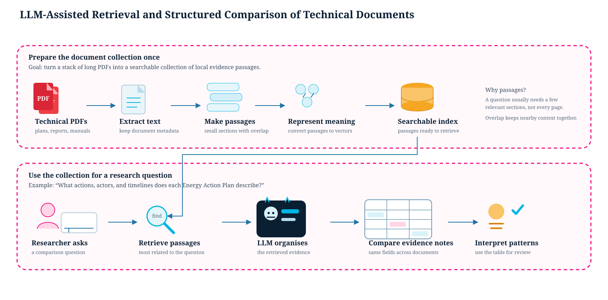

On this page
LLM for Structuring Information
Related API: ccai9012.llm_utils · ccai9012.viz_utils
Overview
Category: Unstructured Text Analysis & Knowledge Structuring
Modular Components: - Text Preprocessing Pipeline - LLM API Calling - LLM Embedding Extractor - Vector Clustering - Q&A over Documents - Heatmap Visualization - Wordcloud generation
Use Cases
- How do short-term rental reviews reflect neighborhood livability over time?
- Can we detect major sentiment shifts before and after a major policy announcement or public event?
- How is generative AI affecting job market? (Job market analysis across industry and time)
- Can we use LLMs to detect gaps between declared policy priorities and proposed implementation measures in urban planning documents?
- How are terms like “resilience”, “sustainability”, or “equity” defined and operationalized differently across documents?
Code Examples
Urban Sentiment Classification
Content: - Extract structured sentiment (location, themes, polarity) from reviews using LLM - Use NER + classification - Create sentiment maps to inform urban design
Dataset:
- Yelp open dataset
- Source: https://business.yelp.com/data/resources/open-dataset/ (Please press the Download JSON red button to get the dataset, and put the file under starter_kits/2_llm_structure_output/urban_sentiment/data folder.)
Required Packages: LangChain, DeepSeek, transformers, pandas, json

Yelp Review heatmap.
Airbnb Reviews Analysis
Content: - Collect Airbnb housing and review data (public dataset Inside Airbnb) - Classification of reviews’ sentiments of different aspects (location, host, facility) - Create Airbnb aspect-wise impression heatmap and wordcloud
Dataset: - Airbnb review dataset - Source: https://insideairbnb.com/get-the-data/

Airbnb Review keywords wordcloud.
LLM-Assisted Retrieval and Structured Comparison of Technical Documents
Goal: Reduce repeated searching when comparing many long Energy Action Plans, reports, or technical manuals. Prepare the collection once as searchable passages, then use an LLM to organise retrieved evidence into the same comparison fields for every document.

Prepare the collection once; reuse it for many document-review questions.
Four-stage workflow: 1. Prepare PDFs as overlapping, searchable passages. 2. Ask a document-review question and retrieve the most relevant passages. 3. Use the same evidence fields—location, objectives, actions, stakeholders, and timeline—for every document. 4. Compare the completed evidence notes and summarise patterns across the collection.
Inputs and outputs: technical PDF collection and review question → searchable passages → retrieved evidence → LLM-organised evidence notes → cross-document comparison table. In the starter kit, overlapping passages help keep neighbouring context together; scans, tables, and figures can still be missed.
How to use the results: use the table to see recurring goals, distinct actions, different responsibilities, and missing timing information across documents. Blank values, repeated boilerplate, and inconsistent formats are useful prompts for follow-up reading. Retain filenames when fuller context is needed.
Suitable applications: compare climate, energy, or housing policy documents across cities, or compare methods and results fields across a focused set of research-paper PDFs.
Extension: this prepare → retrieve → generate pattern is often called retrieval-augmented generation (RAG). For additional material, see IBM’s PDF preparation tutorial and AWS’s RAG overview.
Practical note: retrieval can omit content, LLMs can flatten uncertainty, and table parsing can fail. Preserve filenames and evidence locations, protect sensitive documents and credentials, and consider API cost and data-handling rules.
Dataset: - Energy Action Plans documents - Source: https://cchrc.org/
Required Packages: LangChain, PyMuPDF, pdfplumber, transformers, pandas
Literature Review of Topics
Content: - Webcrawl website for relevant papers - Go through document by document with specific questions - Identify insights & keywords - Catalogue & represent findings
Dataset: Collection of literatures from specific topic